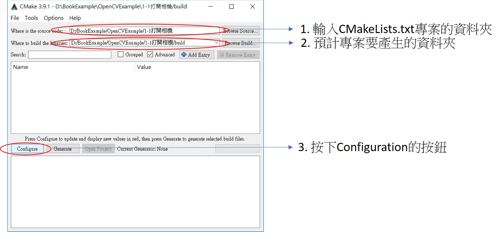
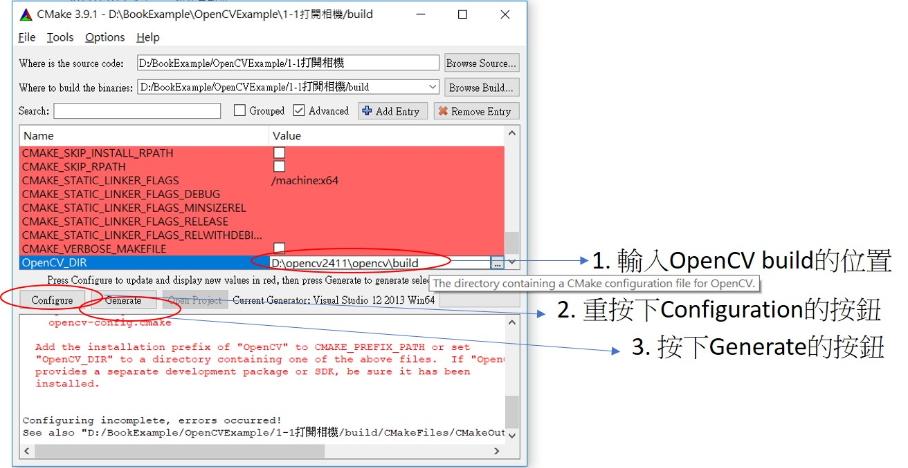

0-2簡易的使用CMake創建專案
簡介:
利用CMake創建專案的好處在於可以讓你的程式不只運行在單一平台上面，CMake 也是 cross compiler make的簡寫，
在windows上面，我們可能只需要將Visual Studio的專案配置好即可編輯，但是到Linux底下，我們又需要為此專案重寫一個makefile，
為了統一方便，我們可以用CMake幫我們產生相對應的專案檔案，如此我們針對不同平台只要改CMake不需要去改不同平台的專案檔。
可以到官方網站下載: https://cmake.org/
在這邊我只紀錄如何簡單的使用在創建專案上，太深的技術或CMake語法我就不寫(其實自己還在研究中)
語法說明:
(1)我們一開始要先決定Cmake需要編譯的版本 (目前官方網站有3.10.2)，
cmake_minimum_required(VERSION 2.6) 希望下載最少是2.6以上的版本，
(2)給定專案的名稱
project(1-1_OpenCamera)
(3)找需要相對應的資料包，例如在這邊我們會用到OpenCV
find_package( OpenCV REQUIRED )
(4)創建專案底下會產生執行檔的cpp
add_executable(1-1_OpenCamera OpenCamera.cpp)
(5)專案需要連結的套件
target_link_libraries(1-1_OpenCamera ${OpenCV_LIBS})
建立OpenCV的專案範例:
用記事本創建一個CMakeLists.txt
裡面需要底下的程式碼，記得把相對應的OpenCamera.cpp(參考底下1-1專案)也一併放入相同資料夾，
CMakeLists.txt 代碼:
cmake_minimum_required(VERSION 2.6)
project(1-1_OpenCamera)
find_package( OpenCV REQUIRED )
add_executable(1-1_OpenCamera OpenCamera.cpp)
target_link_libraries(1-1_OpenCamera ${OpenCV_LIBS})
在Windows底下，記得下載CMake程式
操作方式如下:

如果OpenCV沒有設定環境變數，則會找不到OpenCV，
此時再用手動方式輸入即可 (ps. Linux則不會有此問題)
